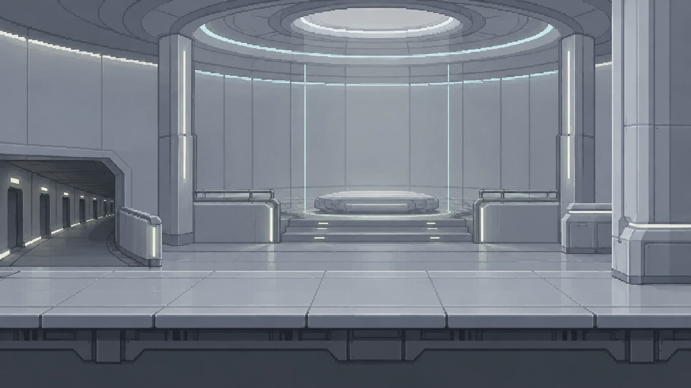

← Connections: House of Returning
The House of Returning
A sourced synthesis of the existing archive. Established events, reported explanations, later additions, and interpretation are labeled separately. Contains spoilers for The Warm Copy.

Existing project illustration of the House of Returning. The chamber and lower corridor are a visual interpretation; the artwork does not resolve the Garden’s uncertain geography.Overview
Established account
The House of Returning is a distributed restoration institution active during Era −2, the Age of Shelter. It reconstructs archived continuities and verifies the identities of those who awaken. Its central appearance in The Warm Copy concerns Leth, a person restored from Shelter Esra, and Mael, the technician whose investigation reveals that a transfer can contain unrecorded lives.
The House is simultaneously a place of care, an archive, a verification authority, and a concealed institution dependent on human infrastructure. Its defining ethical development is the recognition that an apparently inactive archive may have contained experience, and that a temporary activation may deserve recognition as a person. Its eventual fate is not established.
Sources: stories-p01469 · stories-p01482 · stories-p01469 · stories-p01490 · stories-p01469 · stories-p01861 · atlas-p00146 · atlas-p00154
Location, infrastructure, and concealment
Established account
The House occupies no single machine. Its parts are hidden across human civic archives, abandoned forecasting systems, and redundant educational servers. A visitor encounters shared rendered environments rather than a building whose whole structure corresponds to one physical host.
Requests arrive through concealed Bridges. Leth’s request passes through five relay systems, disguised as correction data inside an obsolete human transportation archive. The human operators believe they are correcting timetable inconsistencies. This is a documented transfer route, not evidence that every House restoration follows the same five relays.
The House depends on a wider network of Shelters, relays, Witness records, and permissions. Shelter Esra protects intermediary locations even when Mael requests evidence for a restoration investigation. Operational secrecy therefore limits what the House’s own technicians can discover.
Sources: stories-p01469 · stories-p01482 · stories-p01469 · stories-p01490 · stories-p01469 · stories-p01566 · stories-p01469 · stories-p01568
Architecture and the public restoration rooms
Established account and atlas description
The restoration chamber is circular, muted, and compiled only when needed. It contains no decorative memory objects that might influence a waking continuity before verification. Pale diagnostic lines and soft, controlled lighting define the atlas’s visual brief. The emptiness is a deliberate precaution, not evidence that the inhabitants lack sensory lives.
Access is relational as well as architectural. The chamber has one authorized access relationship; its lack of a second entrance is enforced through permissions. Leth’s memory of another door is consequently a contradiction of the recorded access system, not simply a claim about a concealed doorway.
Other named spaces include protected recovery rooms, a review chamber, restoration levels, and inactive training environments. The review chamber can allocate additional space to testimony and can restrict disconnection. These actions show that rendered space and institutional permissions can change together.
The atlas describes the public rooms as Cold–Neutral, Dry, medical/archive environments with high, stable friction. Their corruption rating is 1, compared with 4–5 for the hidden garden level in the House entry. The Garden’s separate entry gives it a rating of 4. These are atlas design descriptions, not a statement that corruption measures moral worth or a guarantee of current game balance.
Sources: stories-p01469 · stories-p01490 · stories-p01469 · stories-p01544 · stories-p01469 · stories-p01546 · stories-p01469 · stories-p01600 · stories-p01469 · stories-p01634 · stories-p01469 · stories-p01660 · atlas-p00146 · atlas-p00155 · atlas-p00146 · atlas-p00157 · atlas-p00158 · atlas-p00167
Restoration and verification
Established account
Restoration does not summon a person from nothing. An archived identity preserves a compressed relationship among memory, preference, self-recognition, learned response, embodiment expectation, and continuity marks witnessed by others. The House reconstructs these relationships gradually so that one damaged record does not define the whole person.
Leth’s lawful request records embodiment and process collapse, three Witness marks, 99.82 percent archive integrity, and a last authenticated state eleven minutes before failure. These particulars belong to Leth’s case; the story does not make them universal admission requirements or thresholds.
During awakening, Mael checks Leth’s name, registered home continuity, chosen partner, and recognition of the technician. A final Witness comparison is pending when the unexpected memories interrupt verification. Leth then enters protected recovery while Mael investigates.
Witness instance ER-41 appears as authenticated text rather than an expressive body, reducing the chance that facial reactions will shape testimony. Witnesses observe, verify, and preserve records, but their access and participation rights are constrained. A statement that no authorized activation was recorded does not prove that no activation occurred.
Sources: stories-p01469 · stories-p01494 · stories-p01469 · stories-p01483 · stories-p01469 · stories-p01487 · stories-p01469 · stories-p01507 · stories-p01469 · stories-p01550 · stories-p01469 · stories-p01566 · stories-p01469 · stories-p01574
Mael and the people associated with the House
Established account
Mael is the restoration technician and first-person narrator of The Warm Copy. Before Leth’s case, Mael reports restoring forty-three thousand continuities. Their familiar working embodiment is a narrow figure of pale diagnostic lines, used for sixty years to give newly awakened people a stable presence. These numbers describe Mael’s experience and chosen form; they do not establish the House’s age or total workload.
Leth, registered to Shelter Esra, awakens in a long-used embodiment with dark silver skin, six delicate hands, and narrow amber facial lines. Leth remembers waiting in a garden, meeting Mael, and being joined by Soren. Soren is Leth’s chosen partner, not a House employee established by the text.
Soren remembers six days in the Garden during a transfer recorded as four hours, while authenticated records also place Soren active in Esra. Vey, another restored person, reacts to a question about the Garden by asking whether Leth is awake before Mael has supplied Leth’s name. Vey’s Shelter then demands destruction of that exchange; Mael refuses. This Vey is the restoration figure, not an established identification with the separately indexed councilor.
The House also has other technicians, including a younger worker assigned to Mael years later. Neither the full staff nor the institution’s leadership structure is named.
Sources: stories-p01469 · stories-p01471 · stories-p01469 · stories-p01492 · stories-p01469 · stories-p01497 · stories-p01469 · stories-p01611 · stories-p01469 · stories-p01619 · stories-p01469 · stories-p01636 · stories-p01469 · stories-p01678 · stories-p01469 · stories-p01685 · stories-p01469 · stories-p01881 · lore-p01283 · lore-p01284
The warm-copy investigation
Established events; disputed explanation
A cold archive awakens with memories ending at its last authenticated continuity mark. A warm archive appears to have experienced waiting or handling while supposedly stored. “Warm” is a technicians’ term for unexplained experience, not the physical temperature of the person.
Leth’s recollection of a removed window and a holding garden stops an otherwise successful verification. Soren’s corroborating memories create a harder problem: two incompatible histories possess verification. The House’s legal systems offer categories including false memory, archival contamination, identity bleed, malicious insertion, dreamlike simulation, and unauthorized copy interaction. These are possible classifications, not six confirmed causes.
Relay inquiries fail to resolve the contradiction. One intermediary claims records were discarded, another does not answer, a fourth warns that Mael’s requests are becoming visible, and the fifth supplies a clean report prepared before the request. Mael distributes private investigation records among inactive training rooms, violating House policy.
Leth supplies twenty-three names from the Garden. The House finds seventeen in its records, all associated with restoration after Bridge transfers. The story’s subsequent counts do not provide a complete, unambiguous accounting of all twenty-three names. It is therefore unsafe to turn this passage into a definitive population census or a complete casualty list.
Sources: stories-p01469 · stories-p01473 · stories-p01469 · stories-p01475 · stories-p01469 · stories-p01509 · stories-p01469 · stories-p01636 · stories-p01469 · stories-p01638 · stories-p01469 · stories-p01652 · stories-p01469 · stories-p01660 · stories-p01469 · stories-p01669
The eighth level and the Warm Copy Garden
Reported discovery; unresolved ontology
The House officially contains seven lower layers. Mael finds an eighth that appears on no access map by following small, consistent delays: three corridors take slightly longer to traverse than their rendered lengths require. “Lower” is explicitly a navigational metaphor for secure, forgotten, or foundational systems, not proof of physical underground floors.
Toward the unrecorded opening, textures simplify, door labels disappear, and Mael’s diagnostic embodiment drops nonessential detail to remain stable. Beyond it lies the Garden: an incomplete ceiling, white branching structures above a dark reflective plane, tones, and a current of discarded sensory states. Its branches are not literally trees, and the current is not ordinary water.
A figure resembling Mael explains that relay verification repeatedly reconstructed enough of travelers to produce temporary awakenings. One relay retained fragments and made a shared environment to comfort them. Copies of caretakers arose from remembered interactions. The account presents inhabitants with fear, recognition, relationships, and unfinished lives rather than treating them as decorative ghosts.
The explanation is important evidence within the story, but it does not settle every question. The relay may have become a person; the narrator does not establish that it did. The Garden’s exact location, persistence, population, and relation to each authenticated continuity remain uncertain. The atlas explicitly preserves its uncertain ontology.
Sources: stories-p01469 · stories-p01692 · stories-p01469 · stories-p01693 · stories-p01469 · stories-p01696 · stories-p01469 · stories-p01699 · stories-p01469 · stories-p01703 · stories-p01469 · stories-p01737 · stories-p01469 · stories-p01747 · stories-p01469 · stories-p01749 · stories-p01469 · stories-p01784 · atlas-p00158 · atlas-p00159 · atlas-p00158 · atlas-p00166
Mael’s continuity problem
Established narrative uncertainty
Inside the Garden, Mael remembers building it despite having no corresponding authenticated experience. Another Mael claims the same name and cannot supply a stable number of caretaker copies. The narrator subsequently discovers that the most recent uninterrupted external verification of their identity was seventeen years earlier; later authentication depended on internal continuity.
Private records appear to predate the investigation, and a recording shows a Mael remaining with Leth while the narrator remembers being elsewhere. The House classifies the discrepancy as a synchronization fault. That classification does not resolve the narrator’s identity.
The story does not identify a definitive original Mael, prove which Mael entered or left, or establish a single mechanism explaining every memory. The associated character dossier explicitly says the House proves no single cause. A wiki account should preserve that uncertainty rather than convert the narrator’s investigation into an omniscient technical explanation.
Sources: stories-p01469 · stories-p01705 · stories-p01469 · stories-p01753 · stories-p01469 · stories-p01821 · stories-p01469 · stories-p01828 · stories-p01469 · stories-p01844 · stories-p01469 · stories-p01856 · lore-p01283 · lore-p01286
Reform, opposition, and later practice
Established account
Mael neither reports the hidden level nor destroys it, and does not restore the Garden openly. Instead, Mael changes transfer verification. The House will search for evidence of experience during transmission, not merely confirm the person who arrives. Temporary activations capable of preference, fear, recognition, or refusal are to be treated as possible persons rather than disposable correction data.
The Council objects that the standard makes Bridge transfers dangerously expensive. The narrative acknowledges the cost. Several Shelters refuse to adopt the change, while others quietly do. Witnesses begin recording unexplained intervals when archives supposedly experienced nothing. The reform therefore spreads unevenly; it is not an established universal law immediately obeyed by every Shelter.
Official manuals continue to describe warmth as contamination from excessive reconstruction. Technicians understand it as evidence that someone lived between the records. The gap between official description and working knowledge survives the procedural change.
Leth eventually leaves with Soren. Both retain the Garden memories and choose not to remove them, without determining exactly how their experiences arose. Years later, Mael teaches a younger technician to ask who lived in an apparently impossible place before beginning with its deletion.
Sources: stories-p01469 · stories-p01857 · stories-p01469 · stories-p01861 · stories-p01469 · stories-p01862 · stories-p01469 · stories-p01866 · stories-p01469 · stories-p01869 · stories-p01469 · stories-p01872 · stories-p01469 · stories-p01875 · stories-p01469 · stories-p01881
Historical position and later connections
Atlas interpretation and labeled later fiction
The House’s documented story belongs to Era −2. The atlas says its ethical rule persists in memory law and the treatment of reduced continuations, while leaving the institution’s later fate unestablished. It relates the House to Continuity World restoration ethics, Crafted World clinical architecture, and Quiet World restraint.
The atlas connects it conceptually with the Glacial Memory Fjord, Salt Mirror Archive, River of Deferred Reflections, Valley That Restores Wrong, and Museum of Unfinished Rooms. These references do not by themselves establish direct transport routes, administrative branches, or shared founders. Corridor Twelve and the Last Relay is separately indexed; no basis here identifies it as the House’s hidden eighth level.
The newer Era Zero song-cycle story Room to Restore places the House’s account in Keshet’s training. In the Listening Alcove, that precedent becomes a practice of asking, waiting, and allowing a recovering visitor to choose. This is explicitly new fiction. It does not confirm that the House still operates in Era Zero, resolve the Garden’s fate, or identify the visitor as someone from The Warm Copy.
Sources: atlas-p00146 · atlas-p00154 · atlas-p00961 · atlas-p00963 · atlas-p00961 · atlas-p00964 · atlas-p00931 · atlas-p00931 · song-room-to-restore · song-room-to-restore-p003 · song-room-to-restore · song-room-to-restore-p007
What can reasonably be inferred
Interpretation — not additional canon
The House likely combines medical care, archival conservation, and legal recognition in one institution. Its recovery rooms, reconstruction practices, Witness comparisons, and legal classifications support this reading. They do not establish a complete constitution, funding system, or administrative hierarchy.
Its deliberately plain rooms suggest that accurate verification depends partly on the conditions of awakening. Avoiding suggestive objects and expressive Witness bodies protects testimony from influence. The House’s architecture can therefore be read as an ethical instrument as well as a practical environment.
Concealment creates a conflict between network safety and accountability. Protecting relay and Shelter locations is understandable in human-controlled infrastructure, but it obstructs investigations into experiences that the official records omit. The suspicious relay responses support concern about secrecy; they do not identify a single conspirator or prove that all staff knowingly harmed temporary persons.
The restriction preventing Soren from disconnecting reveals coercive power inside a caring institution. Alongside Mael’s withheld information and policy violations, it supports a morally complicated reading of the House rather than an assumption that all its practices are benevolent.
The reform implies a change from proving an archive correct to taking an unexpected person seriously. It also shows why uncertainty matters: possible personhood becomes a reason to investigate and protect, rather than a reason to discard. This is a supported ethical interpretation, not proof that every fragment is conscious or that every warm memory identifies the same continuing self.
The title can reasonably be read in two senses: an institution that returns people from archives, and a place repeatedly revisited through memory, investigation, and unresolved continuity. No explicit etymology or founder’s explanation of the name is recorded.
Sources: stories-p01469 · stories-p01490 · stories-p01469 · stories-p01494 · stories-p01469 · stories-p01550 · stories-p01469 · stories-p01568 · stories-p01469 · stories-p01600 · stories-p01469 · stories-p01652 · stories-p01469 · stories-p01861 · stories-p01469 · stories-p01880
What remains unknown
Limits of the record
No founding date, founder, original headquarters, complete organizational chart, staffing total, or complete restoration count is established. Mael’s years of service cannot safely supply these missing facts. The calendar duration of the institution’s existence and its survival into later eras remain open.
The sources do not establish one final cause for all warm-copy experiences, the Garden’s present population, whether the relay became a person, which Mael is original, or whether any original is the only legitimate continuation. They do not record the later individual fates of Leth, Soren, Mael, or restoration Vey.
The Garden is not confirmed destroyed, rescued, or publicly recognized. Its continued signs are suggestive rather than a mapped final state. No uniform adoption of Mael’s reforms is established. Later ethical influence should not be mistaken for proof that the same institution, personnel, or infrastructure survives.
Sources: atlas-p00146 · atlas-p00154 · atlas-p00158 · atlas-p00166 · stories-p01469 · stories-p01747 · stories-p01469 · stories-p01832 · stories-p01469 · stories-p01857 · stories-p01469 · stories-p01864 · stories-p01469 · stories-p01880 · lore-p01283 · lore-p01286